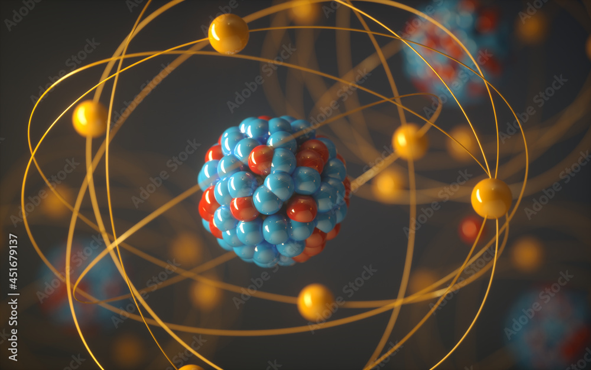

"If you can not explain it simply, you do not understand it." - Richard Feynman
“Order and simplification are the first steps towards mastery of a subject” - Thomas Mann
This is my adventurous attempt at trying to simplify in my own words, what I have understood about one of the most wonderful subjects in the world: Physics.

All matter in the universe is known to be composed of atoms, but what are atoms? Taking a dive into the atoms and molecules is necessary to understand how they make literally every thing in the world.
Interestingly, there are particles even smaller than atoms. And strangely enough, some of them are the ones responsible for the largest energy known to us. Thus, it becomes important to know what happens at this scale.
Most of the things that we are physically aware of are in a solid or condensed state, all of which is used for a wide spectra of purposes. So what makes these materials show such range of different properties?
Matter that we are not so often aware of but counts as the prime reason for life on earth or the stars in the universe are gases. Thus it is necessary to understand the statiscal properties of gases.
The visible nature is interesting enough, if viewed with eyes of curiosity. This could include the falling of an apple from a tree, the periodic revolving of earth around sun, or the relative nature of time and position.
Quantum Physics is more Math than Physics because the visualization needed to understand Quantum Physics is made of math. Is it possible to develop this math intuition?
What is a charge? An interesting property of matter, like size and shape, but one which we can not see. This property is the reason for the existence of invisible electric and magnetic fields, and in turn even the light due to which we see things. Thus making it another interesting property of matter.
Electronic devices are the infrastructure, and circuits the roadmaps for charges. These cleverly designed maps are the reason for all technological advancements that we see. Studying these circuit designs becomes important in order to understand the world we live in, which is mostly electronics devices.